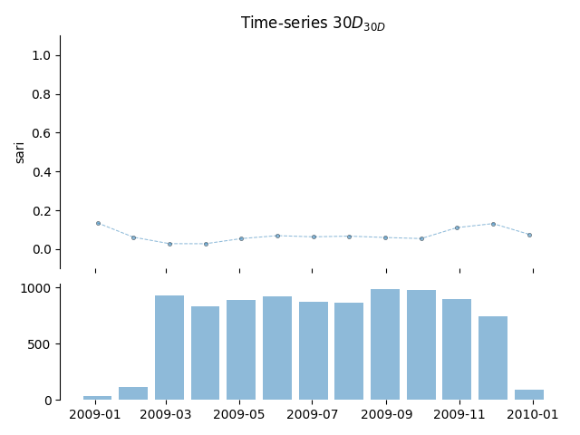

<!DOCTYPE html>
<html class="writer-html5" lang="en" >
<head>
  <meta charset="utf-8" />
  
  <meta name="viewport" content="width=device-width, initial-scale=1.0" />
  
  <title>Step 02 - Time Series Analysis &mdash; pyamr 0.0.1 documentation</title>
  

  
  <link rel="stylesheet" href="../../../_static/css/theme.css" type="text/css" />
  <link rel="stylesheet" href="../../../_static/pygments.css" type="text/css" />
  <link rel="stylesheet" href="../../../_static/gallery.css" type="text/css" />
  <link rel="stylesheet" href="../../../_static/gallery-binder.css" type="text/css" />
  <link rel="stylesheet" href="../../../_static/gallery-dataframe.css" type="text/css" />
  <link rel="stylesheet" href="../../../_static/gallery-rendered-html.css" type="text/css" />

  
  

  
  

  

  
  <!--[if lt IE 9]>
    <script src="../../../_static/js/html5shiv.min.js"></script>
  <![endif]-->
  
    
      <script type="text/javascript" id="documentation_options" data-url_root="../../../" src="../../../_static/documentation_options.js"></script>
        <script src="../../../_static/jquery.js"></script>
        <script src="../../../_static/underscore.js"></script>
        <script src="../../../_static/doctools.js"></script>
    
    <script type="text/javascript" src="../../../_static/js/theme.js"></script>

    
    <link rel="index" title="Index" href="../../../genindex.html" />
    <link rel="search" title="Search" href="../../../search.html" />
    <link rel="next" title="Step 03 - TSA for trends" href="plot_step_03.html" />
    <link rel="prev" title="Step 01 - Introduction" href="plot_step_01.html" /> 
</head>

<body class="wy-body-for-nav">

   
  <div class="wy-grid-for-nav">
    
    <nav data-toggle="wy-nav-shift" class="wy-nav-side">
      <div class="wy-side-scroll">
        <div class="wy-side-nav-search" >
          

          
            <a href="../../../index.html" class="icon icon-home"> pyamr
          

          
          </a>

          
            
            
          

          
<div role="search">
  <form id="rtd-search-form" class="wy-form" action="../../../search.html" method="get">
    <input type="text" name="q" placeholder="Search docs" />
    <input type="hidden" name="check_keywords" value="yes" />
    <input type="hidden" name="area" value="default" />
  </form>
</div>

          
        </div>

        
        <div class="wy-menu wy-menu-vertical" data-spy="affix" role="navigation" aria-label="main navigation">
          
            
            
              
            
            
              <p class="caption"><span class="caption-text">Tutorial</span></p>
<ul>
<li class="toctree-l1"><a class="reference internal" href="../../../usage/introduction.html">Introduction</a></li>
<li class="toctree-l1"><a class="reference internal" href="../../../usage/installation.html">Installation</a></li>
<li class="toctree-l1"><a class="reference internal" href="../../../usage/quickstart.html">Quickstart</a></li>
</ul>
<p class="caption"><span class="caption-text">Example Galleries</span></p>
<ul class="current">
<li class="toctree-l1 current"><a class="reference internal" href="../index.html">Tutorial</a><ul class="current">
<li class="toctree-l2 current"><a class="reference internal" href="../index.html#guide">Guide</a><ul class="current">
<li class="toctree-l3"><a class="reference internal" href="plot_step_01.html">Step 01 - Introduction</a></li>
<li class="toctree-l3 current"><a class="current reference internal" href="#">Step 02 - Time Series Analysis</a><ul>
<li class="toctree-l4"><a class="reference internal" href="#create-time-series-ts">Create time series (TS)</a></li>
<li class="toctree-l4"><a class="reference internal" href="#pearson-correlation-coefficient">Pearson correlation coefficient</a></li>
<li class="toctree-l4"><a class="reference internal" href="#augmented-dickey-fuller-test">Augmented Dickey-Fuller test</a></li>
<li class="toctree-l4"><a class="reference internal" href="#kwiatkowski-phillips-schmidt-shin-test">Kwiatkowski-Phillips-Schmidt-Shin test</a></li>
<li class="toctree-l4"><a class="reference internal" href="#trend-and-stationarity-in-ts">Trend and stationarity in TS</a></li>
</ul>
</li>
<li class="toctree-l3"><a class="reference internal" href="plot_step_03.html">Step 03 - TSA for trends</a></li>
</ul>
</li>
<li class="toctree-l2"><a class="reference internal" href="../index.html#indexes">Indexes</a></li>
<li class="toctree-l2"><a class="reference internal" href="../index.html#metrics">Metrics</a></li>
<li class="toctree-l2"><a class="reference internal" href="../index.html#statistics">Statistics</a></li>
</ul>
</li>
<li class="toctree-l1"><a class="reference internal" href="../../indexes/index.html">Examples with Indexes</a></li>
<li class="toctree-l1"><a class="reference internal" href="../../forecasting/index.html">Examples with TSA</a></li>
<li class="toctree-l1"><a class="reference internal" href="../../nhs/index.html">Examples with datasets</a></li>
<li class="toctree-l1"><a class="reference internal" href="../../visualization/index.html">Visualization</a></li>
</ul>
<p class="caption"><span class="caption-text">API</span></p>
<ul>
<li class="toctree-l1"><a class="reference internal" href="../../../_apidoc/modules.html">pyamr</a></li>
</ul>

            
          
        </div>
        
      </div>
    </nav>

    <section data-toggle="wy-nav-shift" class="wy-nav-content-wrap">

      
      <nav class="wy-nav-top" aria-label="top navigation">
        
          <i data-toggle="wy-nav-top" class="fa fa-bars"></i>
          <a href="../../../index.html">pyamr</a>
        
      </nav>


      <div class="wy-nav-content">
        
        <div class="rst-content">
        
          


<div role="navigation" aria-label="breadcrumbs navigation">

  <ul class="wy-breadcrumbs">
    
      <li><a href="../../../index.html" class="icon icon-home"></a> &raquo;</li>
        
          <li><a href="../index.html">Tutorial</a> &raquo;</li>
        
      <li>Step 02 - Time Series Analysis</li>
    
    
      <li class="wy-breadcrumbs-aside">
        
          
            <a href="../../../_sources/_examples/tutorial/guide/plot_step_02.rst.txt" rel="nofollow"> View page source</a>
          
        
      </li>
    
  </ul>

  
  <hr/>
</div>
          <div role="main" class="document" itemscope="itemscope" itemtype="http://schema.org/Article">
           <div itemprop="articleBody">
            
  <div class="sphx-glr-download-link-note admonition note">
<p class="admonition-title">Note</p>
<p>Click <a class="reference internal" href="#sphx-glr-download-examples-tutorial-guide-plot-step-02-py"><span class="std std-ref">here</span></a>
to download the full example code</p>
</div>
<div class="sphx-glr-example-title section" id="step-02-time-series-analysis">
<span id="sphx-glr-examples-tutorial-guide-plot-step-02-py"></span><h1>Step 02 - Time Series Analysis<a class="headerlink" href="#step-02-time-series-analysis" title="Permalink to this headline">¶</a></h1>
<div class="admonition warning">
<p class="admonition-title">Warning</p>
<p>Verify tests with conditions from stattools.</p>
</div>
<div class="section" id="create-time-series-ts">
<h2>Create time series (TS)<a class="headerlink" href="#create-time-series-ts" title="Permalink to this headline">¶</a></h2>
<p>First lets create an artificial series. The series has been plotted
ad the end of the tutorial.</p>
<div class="highlight-default notranslate"><table class="highlighttable"><tr><td class="linenos"><div class="linenodiv"><pre><span class="normal">17</span>
<span class="normal">18</span>
<span class="normal">19</span>
<span class="normal">20</span>
<span class="normal">21</span>
<span class="normal">22</span>
<span class="normal">23</span>
<span class="normal">24</span></pre></div></td><td class="code"><div class="highlight"><pre><span></span> <span class="c1"># ----------------------------</span>
 <span class="c1"># create data</span>
 <span class="c1"># ----------------------------</span>
 <span class="c1"># Import specific</span>
 <span class="kn">from</span> <span class="nn">pyamr.datasets.load</span> <span class="kn">import</span> <span class="n">make_timeseries</span>

 <span class="c1"># Create timeseries data</span>
 <span class="n">x</span><span class="p">,</span> <span class="n">y</span><span class="p">,</span> <span class="n">f</span> <span class="o">=</span> <span class="n">make_timeseries</span><span class="p">()</span>
</pre></div>
</td></tr></table></div>
</div>
<div class="section" id="pearson-correlation-coefficient">
<h2>Pearson correlation coefficient<a class="headerlink" href="#pearson-correlation-coefficient" title="Permalink to this headline">¶</a></h2>
<p>It measures the linear correlation between two variables with a value within the range
[-1,1]. Coefficient values of -1, 0 and 1 indicate total negative linear correlation, no
linear correlation and total positive correlation respectively. In this study, the
coefficient is used to assess whether or not there is a linear correlation between the
number of observations (susceptibility test records) and the computed resistance index.</p>
<div class="highlight-default notranslate"><table class="highlighttable"><tr><td class="linenos"><div class="linenodiv"><pre><span class="normal">38</span>
<span class="normal">39</span>
<span class="normal">40</span>
<span class="normal">41</span>
<span class="normal">42</span>
<span class="normal">43</span>
<span class="normal">44</span>
<span class="normal">45</span>
<span class="normal">46</span>
<span class="normal">47</span>
<span class="normal">48</span>
<span class="normal">49</span></pre></div></td><td class="code"><div class="highlight"><pre><span></span> <span class="c1"># -------------------------------</span>
 <span class="c1"># Pearson correlation coefficient</span>
 <span class="c1"># -------------------------------</span>
 <span class="c1"># Import pyAMR</span>
 <span class="kn">from</span> <span class="nn">pyamr.core.stats.correlation</span> <span class="kn">import</span> <span class="n">CorrelationWrapper</span>

 <span class="c1"># Create object</span>
 <span class="n">correlation</span> <span class="o">=</span> <span class="n">CorrelationWrapper</span><span class="p">()</span><span class="o">.</span><span class="n">fit</span><span class="p">(</span><span class="n">x1</span><span class="o">=</span><span class="n">y</span><span class="p">,</span> <span class="n">x2</span><span class="o">=</span><span class="n">f</span><span class="p">)</span>

 <span class="c1"># Print summary.</span>
 <span class="nb">print</span><span class="p">(</span><span class="s2">&quot;</span><span class="se">\n</span><span class="s2">&quot;</span><span class="p">)</span>
 <span class="nb">print</span><span class="p">(</span><span class="n">correlation</span><span class="o">.</span><span class="n">as_summary</span><span class="p">())</span>
</pre></div>
</td></tr></table></div>
<p class="sphx-glr-script-out">Out:</p>
<div class="sphx-glr-script-out highlight-none notranslate"><div class="highlight"><pre><span></span>         Correlation
==============================
Pearson:                 0.719
Spearman:                0.734
Cross correlation: 4879866.486
==============================
</pre></div>
</div>
</div>
<div class="section" id="augmented-dickey-fuller-test">
<h2>Augmented Dickey-Fuller test<a class="headerlink" href="#augmented-dickey-fuller-test" title="Permalink to this headline">¶</a></h2>
<p>The augmented Dickey–Fuller test (ADF) was used to determine the presence of a unit root.
When the other roots of the characteristic function lie inside the unit circle the first
difference of the process is stationary. Due to this property, these are also called
difference-stationary processes</p>
<p><a class="reference external" href="https://www.statsmodels.org/stable/generated/statsmodels.tsa.stattools.adfuller.html">https://www.statsmodels.org/stable/generated/statsmodels.tsa.stattools.adfuller.html</a></p>
<div class="highlight-default notranslate"><table class="highlighttable"><tr><td class="linenos"><div class="linenodiv"><pre><span class="normal">62</span>
<span class="normal">63</span>
<span class="normal">64</span>
<span class="normal">65</span>
<span class="normal">66</span>
<span class="normal">67</span>
<span class="normal">68</span>
<span class="normal">69</span>
<span class="normal">70</span>
<span class="normal">71</span>
<span class="normal">72</span>
<span class="normal">73</span>
<span class="normal">74</span>
<span class="normal">75</span></pre></div></td><td class="code"><div class="highlight"><pre><span></span> <span class="c1"># ----------------------------</span>
 <span class="c1"># ADFuller</span>
 <span class="c1"># ----------------------------</span>
 <span class="c1"># Import statsmodels</span>
 <span class="kn">from</span> <span class="nn">statsmodels.tsa.stattools</span> <span class="kn">import</span> <span class="n">adfuller</span>

 <span class="c1"># Import pyAMR</span>
 <span class="kn">from</span> <span class="nn">pyamr.core.stats.adfuller</span> <span class="kn">import</span> <span class="n">ADFWrapper</span>

 <span class="c1"># Create wrapper</span>
 <span class="n">adf</span> <span class="o">=</span> <span class="n">ADFWrapper</span><span class="p">(</span><span class="n">adfuller</span><span class="p">)</span><span class="o">.</span><span class="n">fit</span><span class="p">(</span><span class="n">x</span><span class="o">=</span><span class="n">y</span><span class="p">,</span> <span class="n">regression</span><span class="o">=</span><span class="s1">&#39;ct&#39;</span><span class="p">)</span>

 <span class="nb">print</span><span class="p">(</span><span class="s2">&quot;</span><span class="se">\n</span><span class="s2">&quot;</span><span class="p">)</span>
 <span class="nb">print</span><span class="p">(</span><span class="n">adf</span><span class="o">.</span><span class="n">as_summary</span><span class="p">())</span>
</pre></div>
</td></tr></table></div>
<p class="sphx-glr-script-out">Out:</p>
<div class="sphx-glr-script-out highlight-none notranslate"><div class="highlight"><pre><span></span>  adfuller test stationarity (ct)
==================================
statistic:                  -1.780
pvalue:                    0.71413
nlags:                          2.
nobs:                          97.
stationary (0.05):  non-stationary
==================================
</pre></div>
</div>
</div>
<div class="section" id="kwiatkowski-phillips-schmidt-shin-test">
<h2>Kwiatkowski-Phillips-Schmidt-Shin test<a class="headerlink" href="#kwiatkowski-phillips-schmidt-shin-test" title="Permalink to this headline">¶</a></h2>
<p><a class="reference external" href="https://www.statsmodels.org/stable/generated/statsmodels.tsa.stattools.kpss.html">https://www.statsmodels.org/stable/generated/statsmodels.tsa.stattools.kpss.html</a></p>
<div class="highlight-default notranslate"><table class="highlighttable"><tr><td class="linenos"><div class="linenodiv"><pre><span class="normal">85</span>
<span class="normal">86</span>
<span class="normal">87</span></pre></div></td><td class="code"><div class="highlight"><pre><span></span> <span class="c1"># ----------------------------</span>
 <span class="c1"># Kpss</span>
 <span class="c1"># ----------------------------</span>
</pre></div>
</td></tr></table></div>
</div>
<div class="section" id="trend-and-stationarity-in-ts">
<h2>Trend and stationarity in TS<a class="headerlink" href="#trend-and-stationarity-in-ts" title="Permalink to this headline">¶</a></h2>
<p>An analysis of stationarity around a trend was carried out to identify time series
satisfying the assumptions posed by ARIMA. The augmented Dickey–Fuller test (ADF) was
used to determine the presence of a unit root. When the other roots of the characteristic
function lie inside the unit circle the first difference of the process is stationary. Due
to this property, these are also called difference-stationary processes. Since the absence
of unit root is not a proof of non-stationarity, the Kwiatkowski–Phillips–Schmidt–Shin
(KPSS) test was used to identify the existence of an underlying trend which can also be
removed to obtain a stationary process. These are called trend-stationary processes. In
both, unit-root and trend-stationary processes, the mean can be increasing or decreasing
over time; however, in the presence of a shock, trend-stationary processes revert to this
mean tendency in the long run (deterministic trend) while unit-root processes have a
permanent impact (stochastic trend). The significance level of the tests was set to 0.05.</p>
<div class="highlight-default notranslate"><table class="highlighttable"><tr><td class="linenos"><div class="linenodiv"><pre><span class="normal">108</span>
<span class="normal">109</span>
<span class="normal">110</span>
<span class="normal">111</span>
<span class="normal">112</span>
<span class="normal">113</span>
<span class="normal">114</span>
<span class="normal">115</span>
<span class="normal">116</span>
<span class="normal">117</span>
<span class="normal">118</span>
<span class="normal">119</span>
<span class="normal">120</span>
<span class="normal">121</span>
<span class="normal">122</span>
<span class="normal">123</span>
<span class="normal">124</span>
<span class="normal">125</span>
<span class="normal">126</span>
<span class="normal">127</span>
<span class="normal">128</span>
<span class="normal">129</span>
<span class="normal">130</span>
<span class="normal">131</span>
<span class="normal">132</span>
<span class="normal">133</span>
<span class="normal">134</span>
<span class="normal">135</span>
<span class="normal">136</span>
<span class="normal">137</span>
<span class="normal">138</span>
<span class="normal">139</span>
<span class="normal">140</span>
<span class="normal">141</span>
<span class="normal">142</span>
<span class="normal">143</span>
<span class="normal">144</span>
<span class="normal">145</span>
<span class="normal">146</span>
<span class="normal">147</span>
<span class="normal">148</span>
<span class="normal">149</span>
<span class="normal">150</span>
<span class="normal">151</span>
<span class="normal">152</span>
<span class="normal">153</span>
<span class="normal">154</span>
<span class="normal">155</span>
<span class="normal">156</span></pre></div></td><td class="code"><div class="highlight"><pre><span></span> <span class="c1"># ----------------------------</span>
 <span class="c1"># Stationarity</span>
 <span class="c1"># ----------------------------</span>
 <span class="c1"># Generic</span>
 <span class="kn">import</span> <span class="nn">matplotlib.pyplot</span> <span class="k">as</span> <span class="nn">plt</span>

 <span class="c1"># Import pyAMR</span>
 <span class="kn">from</span> <span class="nn">pyamr.core.stats.stationarity</span> <span class="kn">import</span> <span class="n">StationarityWrapper</span>

 <span class="c1"># Define kwargs</span>
 <span class="n">adf_kwargs</span> <span class="o">=</span> <span class="p">{</span><span class="s1">&#39;maxlag&#39;</span><span class="p">:</span><span class="mi">12</span><span class="p">,</span> <span class="s1">&#39;autolag&#39;</span><span class="p">:</span><span class="s1">&#39;BIC&#39;</span><span class="p">}</span>
 <span class="n">kpss_kwargs</span> <span class="o">=</span> <span class="p">{}</span>

 <span class="c1"># Compute stationarity</span>
 <span class="n">stationarity</span> <span class="o">=</span> <span class="n">StationarityWrapper</span><span class="p">()</span><span class="o">.</span><span class="n">fit</span><span class="p">(</span><span class="n">x</span><span class="o">=</span><span class="n">y</span><span class="p">,</span>
     <span class="n">adf_kwargs</span><span class="o">=</span><span class="n">adf_kwargs</span><span class="p">,</span> <span class="n">kpss_kwargs</span><span class="o">=</span><span class="n">kpss_kwargs</span><span class="p">)</span>

 <span class="c1"># Print summary.</span>
 <span class="nb">print</span><span class="p">(</span><span class="s2">&quot;</span><span class="se">\n</span><span class="s2">&quot;</span><span class="p">)</span>
 <span class="nb">print</span><span class="p">(</span><span class="n">stationarity</span><span class="o">.</span><span class="n">as_summary</span><span class="p">())</span>


 <span class="c1"># ----------------</span>
 <span class="c1"># plot</span>
 <span class="c1"># ----------------</span>
 <span class="c1"># Font type.</span>
 <span class="n">font</span> <span class="o">=</span> <span class="p">{</span>
     <span class="s1">&#39;family&#39;</span><span class="p">:</span> <span class="s1">&#39;monospace&#39;</span><span class="p">,</span>
     <span class="s1">&#39;weight&#39;</span><span class="p">:</span> <span class="s1">&#39;normal&#39;</span><span class="p">,</span>
     <span class="s1">&#39;size&#39;</span><span class="p">:</span> <span class="mi">10</span><span class="p">,</span>
 <span class="p">}</span>

 <span class="c1"># Create figure</span>
 <span class="n">fig</span><span class="p">,</span> <span class="n">ax</span> <span class="o">=</span> <span class="n">plt</span><span class="o">.</span><span class="n">subplots</span><span class="p">(</span><span class="mi">1</span><span class="p">,</span> <span class="mi">1</span><span class="p">,</span> <span class="n">figsize</span><span class="o">=</span><span class="p">(</span><span class="mi">10</span><span class="p">,</span> <span class="mi">4</span><span class="p">))</span>

 <span class="c1"># Plot truth values.</span>
 <span class="n">ax</span><span class="o">.</span><span class="n">plot</span><span class="p">(</span><span class="n">y</span><span class="p">,</span> <span class="n">color</span><span class="o">=</span><span class="s1">&#39;#A6CEE3&#39;</span><span class="p">,</span> <span class="n">alpha</span><span class="o">=</span><span class="mf">0.5</span><span class="p">,</span> <span class="n">marker</span><span class="o">=</span><span class="s1">&#39;o&#39;</span><span class="p">,</span>
          <span class="n">markeredgecolor</span><span class="o">=</span><span class="s1">&#39;k&#39;</span><span class="p">,</span> <span class="n">markeredgewidth</span><span class="o">=</span><span class="mf">0.5</span><span class="p">,</span>
          <span class="n">markersize</span><span class="o">=</span><span class="mi">4</span><span class="p">,</span> <span class="n">linewidth</span><span class="o">=</span><span class="mf">0.75</span><span class="p">,</span>
          <span class="n">label</span><span class="o">=</span><span class="n">stationarity</span><span class="o">.</span><span class="n">as_summary</span><span class="p">())</span>

 <span class="c1"># Format axes</span>
 <span class="n">ax</span><span class="o">.</span><span class="n">grid</span><span class="p">(</span><span class="n">color</span><span class="o">=</span><span class="s1">&#39;gray&#39;</span><span class="p">,</span> <span class="n">linestyle</span><span class="o">=</span><span class="s1">&#39;--&#39;</span><span class="p">,</span> <span class="n">linewidth</span><span class="o">=</span><span class="mf">0.2</span><span class="p">,</span> <span class="n">alpha</span><span class="o">=</span><span class="mf">0.5</span><span class="p">)</span>
 <span class="n">ax</span><span class="o">.</span><span class="n">legend</span><span class="p">(</span><span class="n">prop</span><span class="o">=</span><span class="n">font</span><span class="p">,</span> <span class="n">loc</span><span class="o">=</span><span class="mi">4</span><span class="p">)</span>

 <span class="c1"># Addd title</span>
 <span class="n">plt</span><span class="o">.</span><span class="n">suptitle</span><span class="p">(</span><span class="s2">&quot;Study of Stationarity&quot;</span><span class="p">)</span>

 <span class="n">plt</span><span class="o">.</span><span class="n">show</span><span class="p">()</span>
</pre></div>
</td></tr></table></div>

<p class="sphx-glr-script-out">Out:</p>
<div class="sphx-glr-script-out highlight-none notranslate"><div class="highlight"><pre><span></span>c:\users\kelda\desktop\repositories\virtualenvs\venvpy39-datablend\lib\site-packages\statsmodels\tsa\stattools.py:1875: FutureWarning: The behavior of using nlags=None will change in release 0.13.Currently nlags=None is the same as nlags=&quot;legacy&quot;, and so a sample-size lag length is used. After the next release, the default will change to be the same as nlags=&quot;auto&quot; which uses an automatic lag length selection method. To silence this warning, either use &quot;auto&quot; or &quot;legacy&quot;
  warnings.warn(msg, FutureWarning)


      stationarity (alpha=0.05)
==================================
          root           trend
----------------------------------
c     True (0.138)   False (0.013)
ct    True (0.702)   False (0.015)
==================================
</pre></div>
</div>
<p class="sphx-glr-timing"><strong>Total running time of the script:</strong> ( 0 minutes  0.705 seconds)</p>
<div class="sphx-glr-footer class sphx-glr-footer-example docutils container" id="sphx-glr-download-examples-tutorial-guide-plot-step-02-py">
<div class="sphx-glr-download sphx-glr-download-python docutils container">
<p><a class="reference download internal" download="" href="../../../_downloads/73fa00a4db6c6fbe7243b2e40afb0f67/plot_step_02.py"><code class="xref download docutils literal notranslate"><span class="pre">Download</span> <span class="pre">Python</span> <span class="pre">source</span> <span class="pre">code:</span> <span class="pre">plot_step_02.py</span></code></a></p>
</div>
<div class="sphx-glr-download sphx-glr-download-jupyter docutils container">
<p><a class="reference download internal" download="" href="../../../_downloads/3a55cf0661946e748df27f0afa46f6b4/plot_step_02.ipynb"><code class="xref download docutils literal notranslate"><span class="pre">Download</span> <span class="pre">Jupyter</span> <span class="pre">notebook:</span> <span class="pre">plot_step_02.ipynb</span></code></a></p>
</div>
</div>
<p class="sphx-glr-signature"><a class="reference external" href="https://sphinx-gallery.github.io">Gallery generated by Sphinx-Gallery</a></p>
</div>
</div>


           </div>
           
          </div>
          <footer>
    <div class="rst-footer-buttons" role="navigation" aria-label="footer navigation">
        <a href="plot_step_03.html" class="btn btn-neutral float-right" title="Step 03 - TSA for trends" accesskey="n" rel="next">Next <span class="fa fa-arrow-circle-right" aria-hidden="true"></span></a>
        <a href="plot_step_01.html" class="btn btn-neutral float-left" title="Step 01 - Introduction" accesskey="p" rel="prev"><span class="fa fa-arrow-circle-left" aria-hidden="true"></span> Previous</a>
    </div>

  <hr/>

  <div role="contentinfo">
    <p>
        &#169; Copyright 2021, Bernard Hernandez.

    </p>
  </div>
    
    
    
    Built with <a href="https://www.sphinx-doc.org/">Sphinx</a> using a
    
    <a href="https://github.com/readthedocs/sphinx_rtd_theme">theme</a>
    
    provided by <a href="https://readthedocs.org">Read the Docs</a>. 

</footer>
        </div>
      </div>

    </section>

  </div>
  

  <script type="text/javascript">
      jQuery(function () {
          SphinxRtdTheme.Navigation.enable(true);
      });
  </script>

  
  
    
   

</body>
</html>